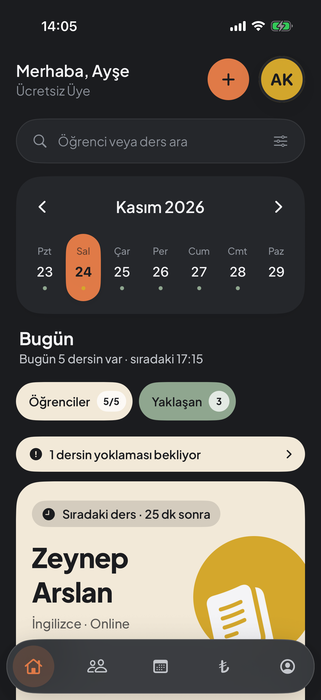
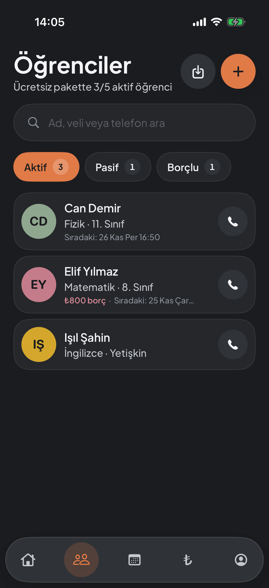
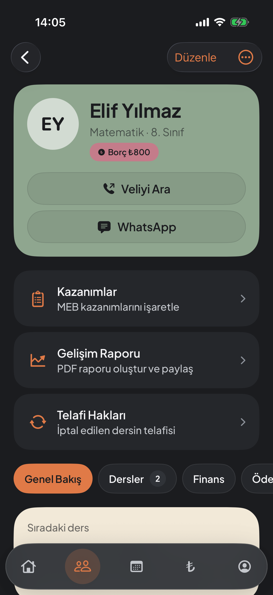
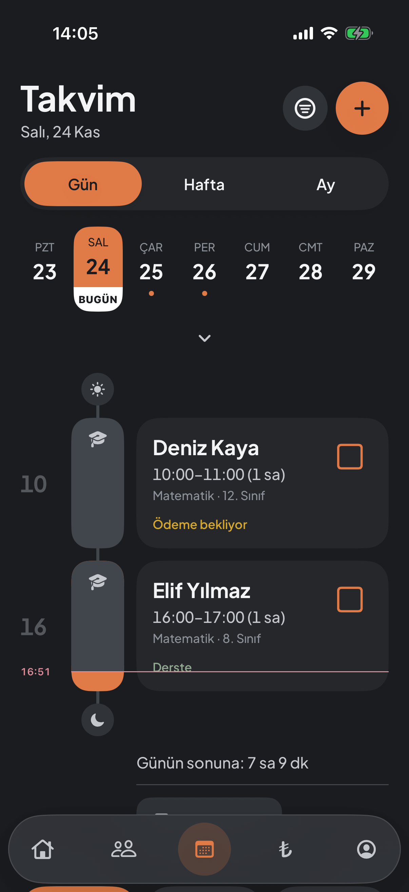
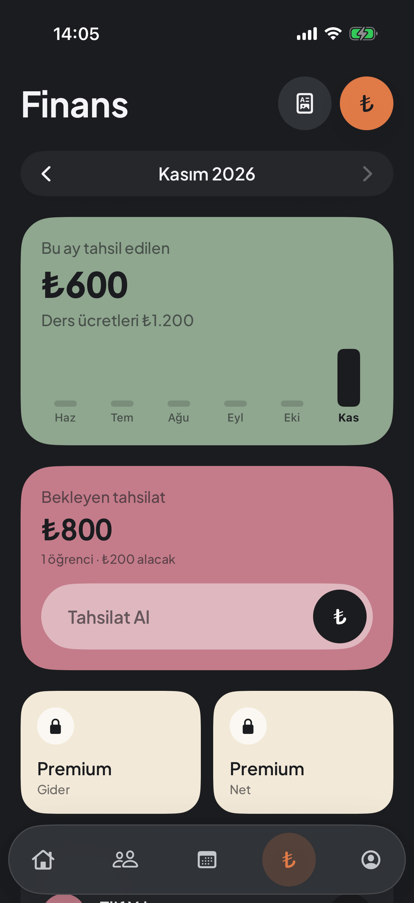

Öğretmen Paneli, özel ders öğretmenlerinin ve küçük eğitim kurumlarının günlük işlerini tek uygulamadan yönetmesi için geliştirilmiş bir iPhone uygulamasıdır.
Ekran görüntüleri

Ana Sayfa

Öğrenciler

Öğrenci profili

Takvim

Finans
Neler yapabilirsiniz?
Öğrencileri ve velilerinin iletişim bilgilerini kaydedin.
Ders programınızı oluşturun, tekrarlayan dersleri kurun, iptal ve erteleme yapın, yoklama alın.
Ödevleri ve MEB kazanımlarını öğrenci bazında takip edin.
Ders ücretlerini, paketleri, tahsilatları, borçları ve giderleri kayıt altında tutun.
Veli portalı ile velilerin çocuklarının programını, ödevini ve bakiyesini görmesini sağlayın.
Derslerinizi telefon takvimine ekleyin; widget, Siri ve Kestirmeler ile sıradaki dersinize ulaşın.
Hesap ve giriş
Uygulamaya e-posta, Apple veya Google hesabınızla girebilirsiniz. Google ile girişte yalnızca ad, e-posta adresi ve profil fotoğrafınız, sizi tanımak ve profilinizde göstermek için kullanılır. Ayrıntılar Gizlilik Politikası'ndadır.